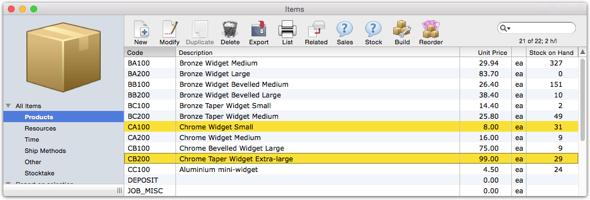
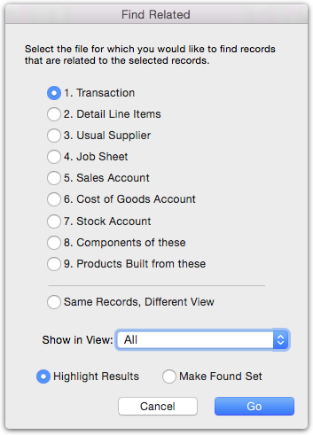
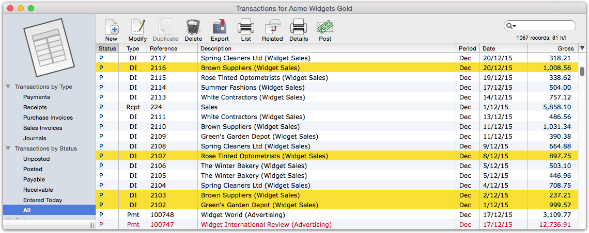
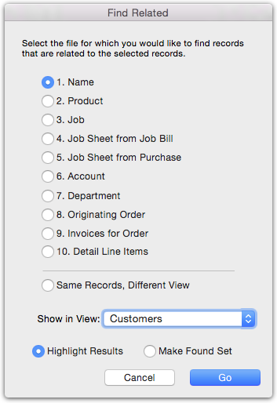
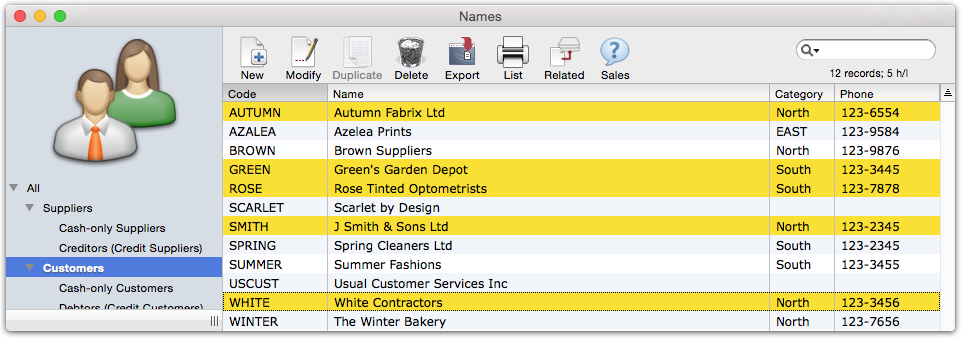

MoneyWorks Manual
Find Related
The Find Related command allows to locate records in other lists that are related in some way to the currently highlighted records. It is a very powerful way of finding out information such as:
- Who has purchased these products?
- Who hasn’t purchased these products?
- What products have been purchased by these customers?
- What other products have been purchased by customers who purchased these products?
- What transactions were used to pay these invoices?
The general way to operate the command is as follows (as this probably won’t make a lot of sense first time around, look at the examples below):
- Highlight the record(s) in the source file
These represent the subject of the enquiry (for example, the product records in “who has purchased this product”).
- Click the Related toolbar button, or Choose Select>Find Related
The Find Related settings window will open (its exact format layout on where you are relating from):

This is used to specify the related list which you want to show, and its exact format depends on the current source list.
- Choose the related list to show from the set of radio buttons
If the related list is tabbed, choose the tab view to show from the tab view pop-up menu.
- Choose whether you want the found records to be simply highlighted in the related list, or made the found set
Highlight Results: All the records in the related list will be shown, but those that are related to your query will be highlighted.
Make Found Set: Only those records that are related to your query will be shown. They will not be highlighted.
- Click Go
The related list will be displayed, with the related records shown or highlighted.
Example 1: Who has purchased these products?
To identify who has purchased the products we first highlight the Items of interest in the Items list and then use the Find Related command, as shown stepwise below:
- Highlight the Item records in the Items list and click the Related button

The Find Related window will open
- Set the options to highlight the transactions involving these Items and to show in the All list of the transaction list window, then click Go

The Transaction List window will open with all transactions involving the selected products highlighted.

- Without changing the selection, click the Related toolbar button
The Find Related window will open again

- Set the Show in View popup to customers and click Go
The Names window will open on the Customers tab, with all customers who purchased the selected products highlighted.

Example 2: Who has not purchased these products
- Repeat steps 1 - 4 above
- Choose Select>Invert Selection
The highlighting inverts, so that those customers who have not purchased the products are highlighted.
Example 3: What products have been purchased by these customers?
- Highlight the customers of concern in the Names file
- Click the Related button, set to Highlighted Results, and go to the Sales Invoices tab of the Transactions file
All invoices involving those customers will be highlighted in the Transactions list
- Click the Related button, set to Highlighted Results, and go to the products tab in the Items file
The products that have been purchased by the customers are highlighted.
Example 4: What products have not been purchased by these customers?
- Repeat steps 1-4 above
- Choose Select>Invert Selection
The highlighting inverts, so that those products not purchased by the customers are highlighted.
Tip: Similar results can be achieved by using a relational search in a Find by Formula